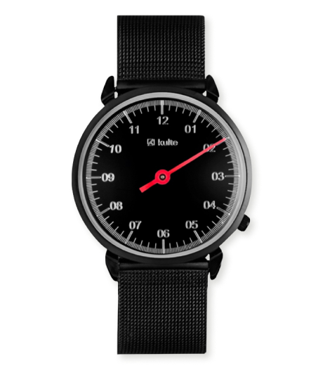
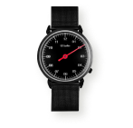
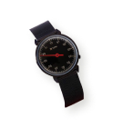
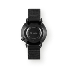
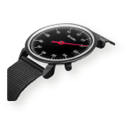

Каталог
Акіції
Доставка
Контакти


Головна
>
Каталог
>
Чоловічі годинники
>
Georg Jensen
<





>
KULTE, 26 ММ
12 700
- Опис
- —————
Технічні характеристики
Наручні годинники KULTE, розроблені датським дизайнером Хеннінгом Коппелія, були випущені в 1982 році. Вони були зустрінуті оплесками, а дизайн вважався революційним.
Загальна естетика мінімалістична, а гострі, плавні лінії корпусу стали легендарними. Механізм Swiss Made забезпечує високий рівень технічних характеристик.
Наручний годинник KULTE - це зразок датської дизайнерської спадщини, історія балансу та точності як всередині, так і зовні.